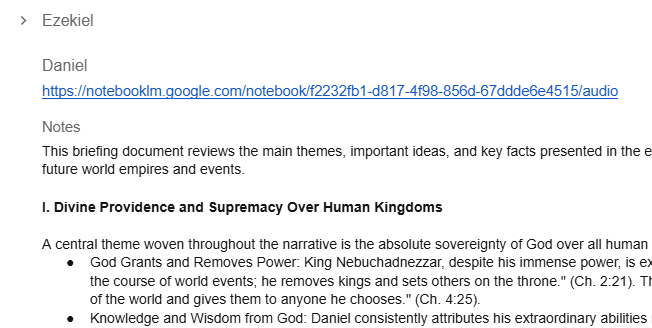

Blessed Sabbath to you! I wonder if God takes a Sabbath — if He honors it Himself. We know that after creating the universe in six days He rested on the seventh, which became the model for all future Sabbaths, so we know He at least took that one. But we also know from the rest of Scripture that God, Jesus, and the Spirit are all “worker bees” (John 5:17), so I think it's fair to assume they were back at it after day seven. So the question remains — what does God do on Saturdays? Option A, Deuteronomy 29:29. Option B, Jeremiah 33:3. Option C — don't be silly.
I have four things to share this morning.
First, I've decided to be part of the group for Exile and Return. I've been walking every day lately — a huge win for me — and as I walk I listen to the podcasts for the eight books we'll be studying. I'm learning so many great things I never knew before, just because of the voice, the inflections, the rhetorical questions. It's still God's Word — remember, I restrict AI from using any source but the actual book of the Bible I'm studying — but it comes at me in a whole new way. I wish I could have done it 49 years ago. I was praying about all these new things I was learning, asking Him to help me apply it, when a bit of “spiritual mojo” hit me. Hard to describe, but you know what I mean. It said: be part of the group this year. If you're being blessed this much by an AI-generated podcast, imagine what you'll learn from your BSF group that you dearly love. But was that mojo really from God? It sounded good, sure seemed like something He'd say — but Satan disguises himself as an angel of light too. So I took 1 Thessalonians 5:21 to heart and laid it before the Lord. I immediately felt a warm feeling in the baby finger of my left hand, so I knew for sure my spiritual mojo was of God.
Second, God touched my heart this morning in my Quiet Time — almost brought me to tears. This time it wasn't the mojo talking, it was a short online video clip. But after watching the 30-second clip, my spiritual mojo did chime back in and told me I'm a bummer lamb.
Third, I love the podcasts so much I'm adding more notes to the Google Doc I'm using to capture everything God's teaching me as I prepare for Exile and Return. A couple screenshots below.

Fourth, besides the Google Doc I've added a link on my website to make it even easier to access the podcasts, mainly because I believe my wife would greatly benefit from listening to them. She's not the least bit tech-savvy, so she could never navigate my Google Doc — I tried to help her and she just couldn't do it — but she can get to my webpage just fine.
I guess that's about it for now. Still praying for you all, and especially for Cooper. — Erv
Comments